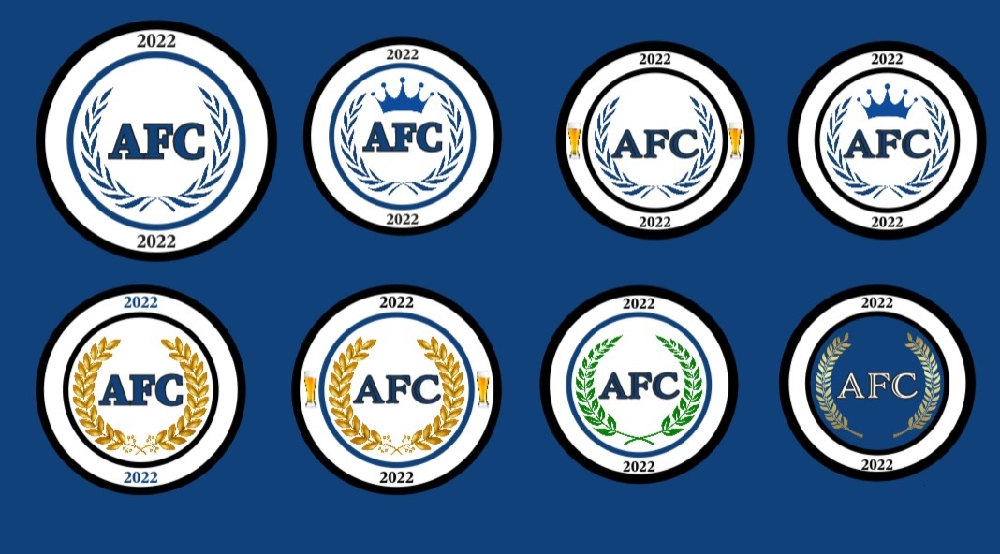
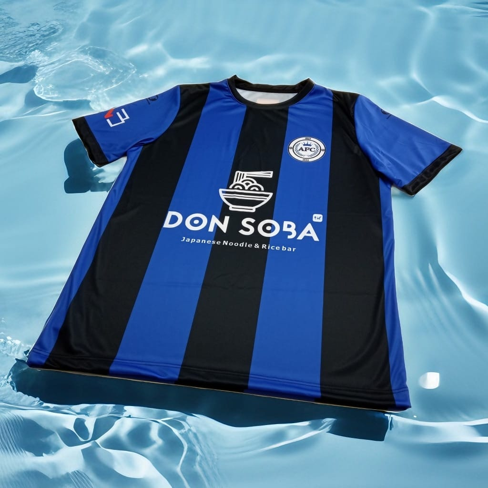
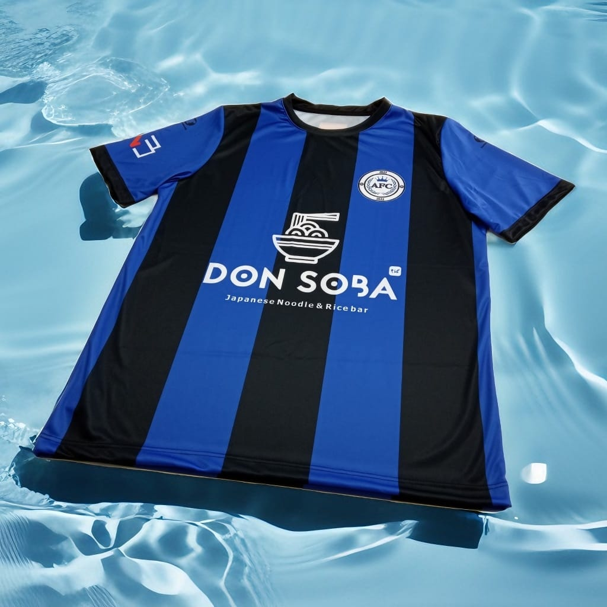

LOS JUGADORES
Clica en cada uno de ellos para conocerlos. (Funcional, pero imágenes en desarrollo)


LOS DISEÑOS
EL AZUL COMO NUESTO COLOR
El azul no es solo un color, sino un símbolo de unidad, confianza y grandeza. Elegirlo como el color principal en la camiseta de un equipo de fútbol es una declaración de valores y aspiraciones, que refuerza la identidad del equipo y genera un impacto positivo tanto en los jugadores como en los seguidores. Desde el primer momento, supimos que llevaríamos ese color en nuestras camisetas, demostrándolo hasta cuando comenzamos en esto, con la primera equipación de la historia del club. Durante nuestra primera temporada llevamos esta humilde camiseta, con la que conseguimos el ascenso directo a Segunda División en nuestro primer año. Es una equipación que recordaremos con nostalgia, pero después de hacer historia con ella nos dimos cuenta de que nos faltaba algo. Aquello que nos faltaba era identindad, por lo que necesitábamos una equipación más personal, además de algo muy importante, un escudo.

UN ESCUDO DIGNO DE SER PORTADO
TEXTO AQUI

UN SALTO DE CALIDAD
TEXTO AQUI

El azul no es solo un color, sino un símbolo de unidad, confianza y grandeza. Elegirlo como el color principal en la camiseta de un equipo de fútbol es una declaración de valores y aspiraciones, que refuerza la identidad del equipo y genera un impacto positivo tanto en los jugadores como en los seguidores. Desde el primer momento, supimos que llevaríamos ese color en nuestras camisetas, demostrándolo hasta cuando comenzamos en esto, con la primera equipación de la historia del club. Durante nuestra primera temporada llevamos esta humilde camiseta, con la que conseguimos el ascenso directo a Segunda División en nuestro primer año. Es una equipación que recordaremos con nostalgia, pero después de hacer historia con ella nos dimos cuenta de que nos faltaba algo. Aquello que nos faltaba era identindad, por lo que necesitábamos una equipación más personal, además de algo muy importante, un escudo.
TEXTO AQUI
UN SALTO DE CALIDAD
TEXTO AQUI

TEXTO AQUI